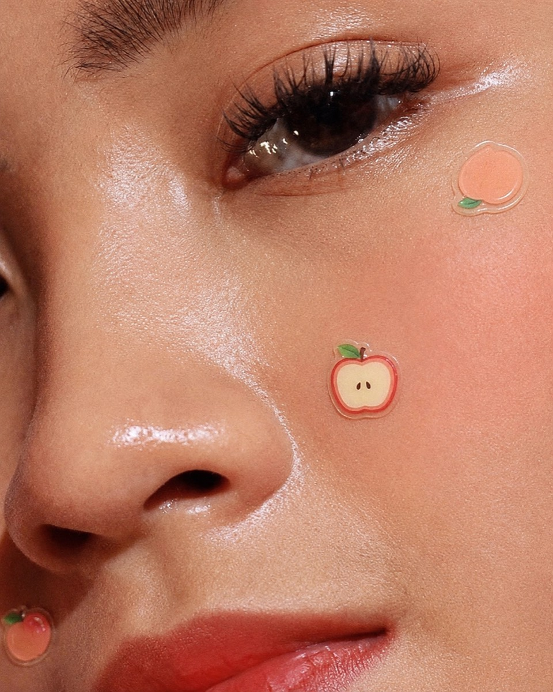
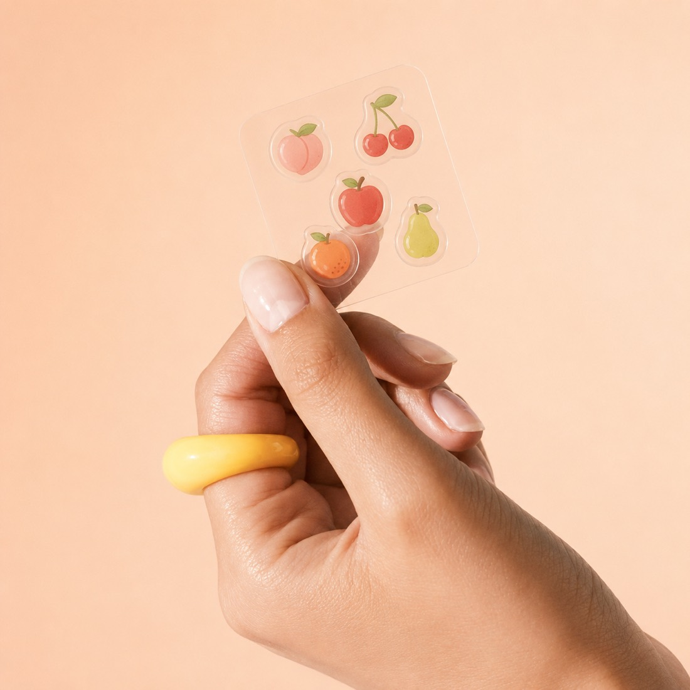
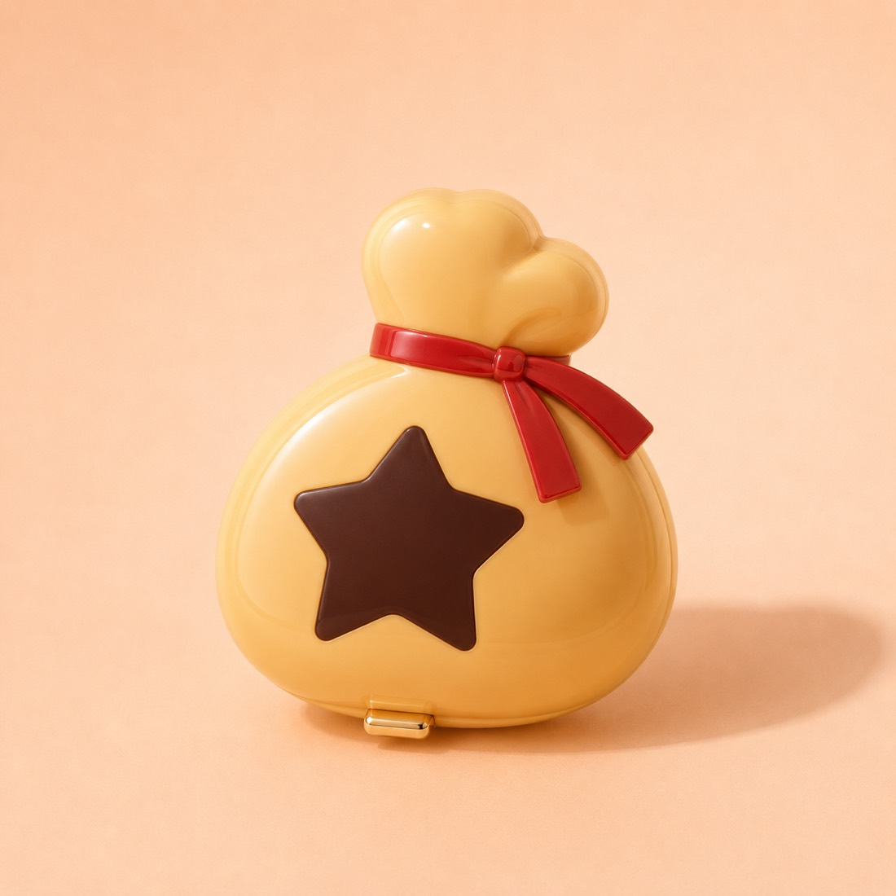
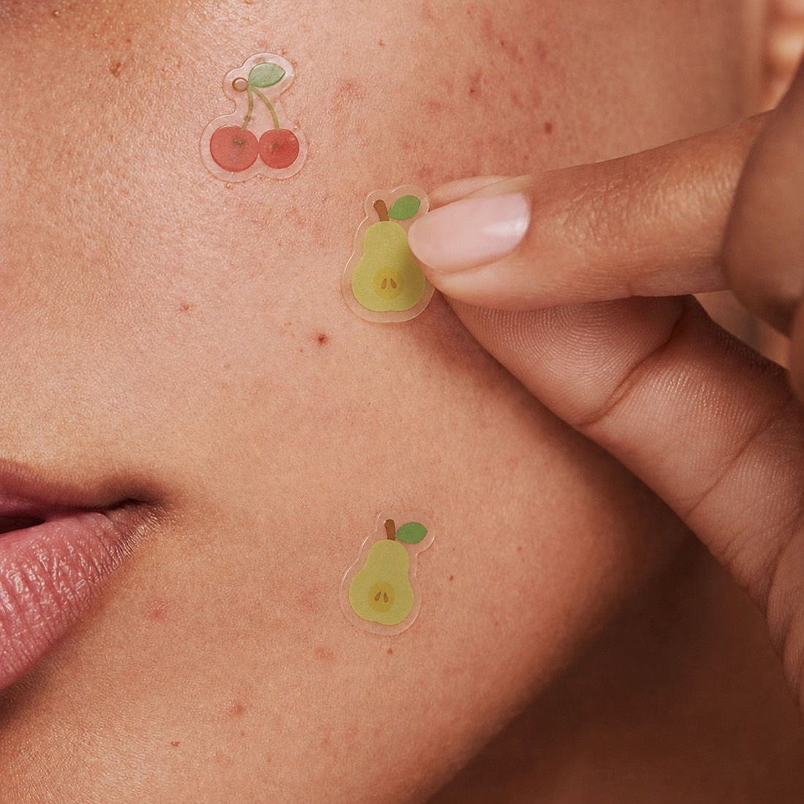
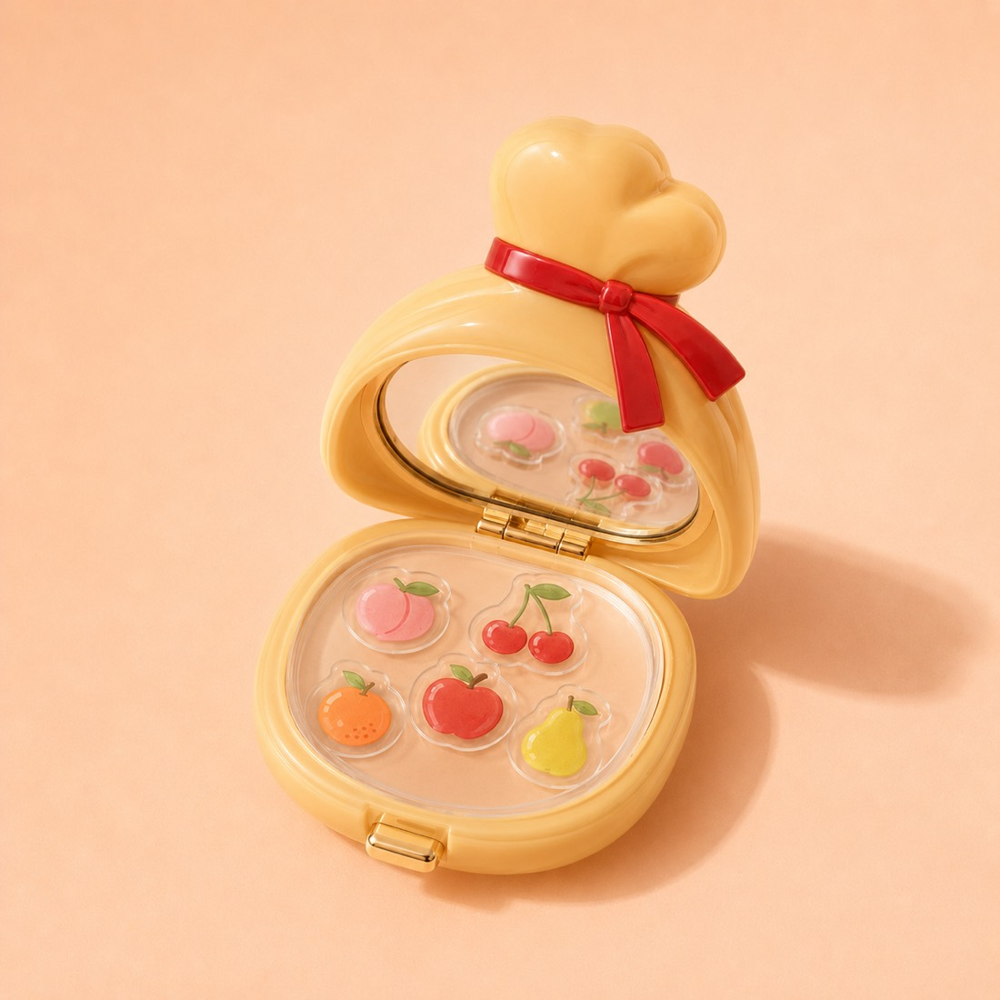

Starface ×
Animal Crossing
A limited-edition fruit-shaped pimple-patch collection inspired by the native fruit of Animal Crossing.

The Collection

Fruit Patch Sheet
Five fruits, each its own little design. The fun is in collecting them and picking your favorite.

Bell Bag Compact
A compact shaped like the Animal Crossing bell bag. Closed, it's a glossy keepsake for your desk. Open, a mirror and a tray of patches to take on the go.
The Concept
Instead of treating acne like something to hide, the campaign turns skincare into a cozy ritual of care, inspired by the small daily rhythms of Animal Crossing like watering flowers, picking fruit, and checking in with your villagers.
The Insight
Skincare doesn't have to be clinical. For Gen Z, it's allowed to be playful, visible, and a little fun.
Starface made acne patches something people show off. Animal Crossing made daily upkeep feel cozy and collectible. Both run on the same small rituals: checking in, taking care, making ordinary life softer.


TikTok Concepts
POV: the morning patch
Someone wakes up, spots a blemish, puts on a peach patch, and the screen fills with cozy game-style task prompts.
Choose your native fruit
People pick which fruit patch they are based on their personality. Instant duet/stitch bait.
GRWM: island reset edition
Skincare, patch, coffee, outfit: a cozy morning routine framed as starting your island for the day.
Art Direction
Glossy beauty photography meets cozy game nostalgia. Tactile and toy-like, with the polish of a real launch.
Why It Works
For Starface
Expands the collectible-patch universe beyond stars into character-driven, seasonal product drops.
For Animal Crossing
Brings the game into a real-life ritual fans already understand: collecting fruit, caring for your island, personalizing your world.
For the audience
A product that's cute, wearable, nostalgic, and shareable. Skincare turned into a tiny moment of play.
In One Line
Breakouts are just side quests.
Speculative concept. Not affiliated with, endorsed by, or commissioned by Starface World or Nintendo. Brand names are referenced as cultural artifacts for a creative-direction exercise. All concept, copy, art direction, and design by Brooklyn Gibbs.